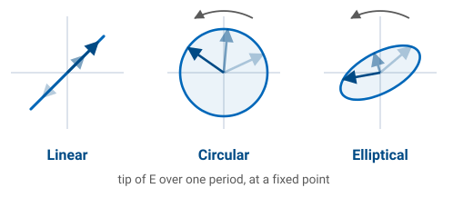
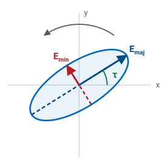
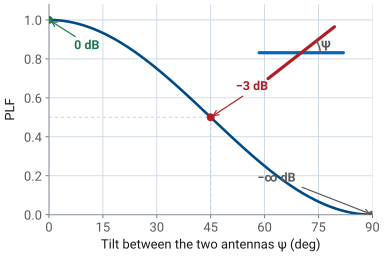
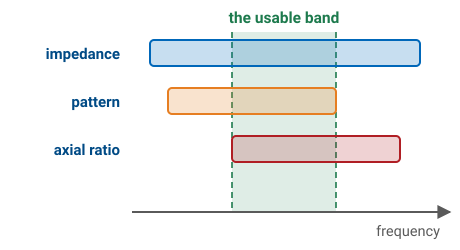
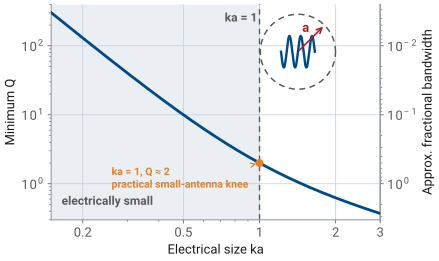

L3 - Polarization and Bandwidth#
Polarization and Bandwidth
Polarization and bandwidth are the two most misquoted specs on a datasheet.
Lesson 3 · Antennas, Phased Arrays, and Radar Systems · Dr. Neil Rogers
Slides
Learning Objectives
- I can identify the polarization state of a plane wave (linear, circular, elliptical) from the amplitude and phase of its two orthogonal components.
- I can compute the axial ratio of an elliptically polarized wave and explain what a "3 dB axial ratio" spec means for a circularly polarized antenna.
- I can compute the polarization loss factor (PLF) between a transmit and receive antenna with mismatched polarizations.
- I can define the impedance, pattern, and polarization bandwidths of an antenna and compute fractional bandwidth from the endpoint frequencies.
- I can match common antenna families (patch, dipole, horn, log-periodic, spiral, Vivaldi) to their typical bandwidth range.
Where we were
Lesson 2 handed you the terms of a link budget — directivity, gain, effective aperture, Friis. Every one of them quietly assumed the two antennas were polarization matched and operating at a single frequency. Today you pay for both assumptions: polarization decides how much of an arriving wave an antenna can see at all, and bandwidth decides over what span of frequencies any of the datasheet numbers still hold. They are also the two most misquoted specs on an antenna datasheet, and the last part of this lesson prices each misquote in dB.
Part 1: Polarization
What polarization is
Fix a point in space and watch the tip of the electric field vector \(\mathbf{E}(t)\) trace a curve over one period. That curve is the polarization.
If the tip moves back and forth along a line, the wave is linearly polarized. If it traces a circle, the wave is circularly polarized. If it traces an ellipse (the general case), the wave is elliptically polarized. Those are the only three shapes on offer:

Polarization matters because a receive antenna is only sensitive to the component of the incident \(\mathbf{E}\) that is aligned with its own polarization. Everything else is thrown away.
Building any polarization from two linear components
You can write any plane wave propagating along \(+\hat{z}\) as the sum of two orthogonal linear components:
Three numbers fix the polarization completely
Three numbers fix the polarization completely: the amplitudes \(E_{x}\) and \(E_{y}\), and the relative phase \(\delta\) between them.
\(E_{x}\), \(E_{y}\) |
\(\delta\) |
Polarization |
|---|---|---|
\(E_{y} = 0\) |
— |
Linear, along \(\hat{x}\) |
\(E_{x} = 0\) |
— |
Linear, along \(\hat{y}\) |
\(E_{x} = E_{y}\) |
\(0\) or \(180^{\circ}\) |
Linear, slant (45° or 135°) |
\(E_{x} = E_{y}\) |
\(-90^{\circ}\) |
Right-hand circular (RHCP) |
\(E_{x} = E_{y}\) |
\(+90^{\circ}\) |
Left-hand circular (LHCP) |
\(E_{x} \ne E_{y}\), \(\delta = \pm 90^{\circ}\) |
Elliptical, axes on \(\hat{x}\) / \(\hat{y}\) |
|
Anything else |
Elliptical, tilted |
Right or left hand?
IEEE convention — point your right thumb along the direction of propagation. If the E-vector rotates in the direction your fingers curl, it’s right-hand polarized. Left-hand is the mirror image.
From a line to an ellipse to a circle
Move the sliders for \(E_{x}\), \(E_{y}\), and phase \(\delta\) (or hit a preset) and watch the E-vector trace at a fixed \(z\) change from a line to an ellipse to a circle. The two component waveforms below the trace show what each linear channel sees.
Axial ratio
For the general elliptical case, the axial ratio is the ratio of the major axis of the ellipse to the minor axis:
The polarization ellipse
Those are the two lengths marked on the ellipse below, along with the tilt of the ellipse in the transverse plane:

A “CP antenna” is really a nearly-CP antenna
In dB: \(\text{AR}_{\text{dB}} = 20 \log_{10}(\text{AR})\).
\(\text{AR} = 1\) (0 dB) — pure circular polarization.
\(\text{AR} \to \infty\) (\(\infty\) dB) — pure linear polarization.
Everything else is elliptical, with \(1 < \text{AR} < \infty\).
A “CP antenna” is really a nearly-CP antenna. Real specs read something like “AR ≤ 3 dB across the operating band.” Read that carefully: it does not mean the antenna is never worse than 3 dB down. It means the power a linear antenna recovers swings over a 3 dB range as you rotate it — between \(-1.8\) and \(-4.8\) dB, rather than sitting at the flat \(-3\) dB an ideal circular wave would give. Part 3 derives those two numbers.
Worked example — axial ratio of a measured wave
Worked example — axial ratio of a measured wave
You measure a wave traveling along \(+\hat{z}\):
Read off the three numbers that decide everything: \(E_{x} = 3\), \(E_{y} = 1\), and \(\delta = -90^{\circ}\). The phase is \(-90^{\circ}\), so the wave is right-hand polarized. The amplitudes are unequal, so it is elliptical rather than circular, with the ellipse axes lying along \(\hat{x}\) and \(\hat{y}\) (the second-to-last row of the table above). The major axis is the larger amplitude and the minor axis the smaller:
Worked example — right-hand elliptical
Worked example — right-hand elliptical
So the wave is right-hand elliptical — and it would miss an “AR ≤ 3 dB” circular spec badly. At 9.5 dB it is much closer to linear than to circular, which is exactly what you would guess from a 3:1 amplitude imbalance.
Polarization loss factor (PLF)
When a wave with polarization \(\hat{\rho}_{\text{w}}\) arrives at an antenna with polarization \(\hat{\rho}_{\text{a}}\), the fraction of incident power the antenna captures is the polarization loss factor:
The unit vectors are complex when either wave is not purely linear — that dot product hides the phase relationship between \(E_{x}\) and \(E_{y}\).
PLF cheat sheet
Five cases you should know cold:
Wave |
Antenna |
PLF |
PLF (dB) |
|---|---|---|---|
Linear (\(\hat{x}\)) |
Linear (\(\hat{x}\)) |
1 |
0 dB — co-polarized |
Linear (\(\hat{x}\)) |
Linear (\(\hat{y}\)) |
0 |
\(-\infty\) dB — cross-polarized |
Linear (any) |
RHCP or LHCP |
0.5 |
\(-3\) dB |
RHCP |
RHCP |
1 |
0 dB |
RHCP |
LHCP |
0 |
\(-\infty\) dB — sense mismatch |
Every row here assumes perfect circular polarization. Datasheets spec real “CP” hardware at AR ≤ 3 dB, which moves several of these numbers substantially; Part 3 prices the difference.
Two linear antennas tilted by angle ψ
For two linear antennas tilted by angle \(\psi\) relative to each other, \(\text{PLF} = \cos^{2}\psi\) — this is why aligning your handheld radio matters. (The tilt gets its own symbol \(\psi\) because \(\theta\) is already spoken for as the polar angle.)
Polarization loss factor against tilt angle
The curve is gentle near alignment and brutal near \(90^{\circ}\):

Thirty degrees of misalignment costs about a decibel; the last ten degrees before broadside costs everything.
Worked example — pricing two everyday mismatches (GPS and a linear whip)
Worked example — pricing two everyday mismatches (GPS and a linear whip)
A GPS satellite transmits RHCP; your receiver is a plain linear whip. This is the third row of the table — a linear antenna recovers half the power in any circular wave, whatever its orientation:
Half the incident power is thrown away and no amount of turning the whip recovers it. That fixed 3 dB is the price of the rotation-immunity described in the next section.
Worked example — pricing two everyday mismatches (two linear antennas)
Worked example — pricing two everyday mismatches (two linear antennas)
Now put linear antennas on both ends: a base-station dipole is vertical, and the handheld talking to it is tilted \(\psi = 30^{\circ}\) off vertical. Here the \(\cos^{2}\psi\) rule applies:
a mild loss. Tilt the handheld all the way to horizontal and \(\cos^{2}(90^{\circ}) = 0\) — in principle the link dies completely. In practice it does not quite: multipath scatters some energy back into the orthogonal polarization, so a real cross-polarized null bottoms out somewhere around \(-20\) dB rather than at zero.
The E-vector traces a helix as the wave propagates
The E-vector doesn’t just rotate at a point — it traces a helix as the wave propagates. Toggle RHCP / LHCP to see the corkscrew flip handedness. The blue and red shadows on the back walls are the component sinusoids \(E_{x}(z, t)\) and \(E_{y}(z, t)\).
Why satellite and GPS links use circular polarization
Faraday rotation in the ionosphere rotates the plane of a linearly polarized wave by an unpredictable angle as it passes through — so a purely linear satellite downlink would fade in and out as ionospheric conditions changed. Circular polarization, by contrast, is invariant under rotation about the propagation axis (a rotated circle is still a circle), so CP dodges the problem entirely. Cost: a fixed 3 dB penalty when either end is only linear.
The same argument applies whenever the receiver’s orientation isn’t fixed — cubesats tumble, handhelds rotate, aircraft bank.
Part 2: Bandwidth
An antenna has multiple bandwidths
An antenna has multiple bandwidths, one for each parameter you care about:
Impedance bandwidth — range of frequencies over which the antenna is well matched to its feed (usually VSWR ≤ 2, i.e. \(|\Gamma| \le 1/3\), or return loss (RL) ≥ 9.5 dB). This is the most common definition and the one meant by an unqualified “bandwidth.”
Pattern bandwidth — range where the radiation pattern (gain, beamwidth, sidelobe level) stays within spec.
Polarization bandwidth — range where axial ratio stays below a threshold, typically 3 dB.
The three don’t have to coincide
The three don’t have to coincide. You can match a patch antenna over a wider band than it produces good CP, so its polarization bandwidth is narrower than its impedance bandwidth. Stack the three bands against frequency and the antenna is only usable where all of them overlap:

Quote the widest bar and you have quoted the impedance bandwidth
Quote the widest bar and you have quoted the impedance bandwidth. Quote the overlap and you have quoted something a system can actually use.
Fractional and ratio bandwidth
Report bandwidth as a fraction of the center frequency, not just Hz:
100 MHz means very different things at 500 MHz and at 50 GHz.
For wideband antennas the more useful figure is the ratio bandwidth (RBW):
Narrowband, broadband, ultra-wideband
Rough categories:
Narrowband — FBW \(\lesssim 5\%\). Resonant antennas: patches, small loops, dielectric resonator antennas.
Broadband — FBW \(5\%\)–\(50\%\). Dipoles, slots, horns, most practical designs.
Ultra-wideband (UWB) — RBW \(\ge 2{:}1\), which is the same bar as FBW \(\ge 67\%\) with the definitions above. Log-periodic, spiral, Vivaldi/TSA, biconical.
That 2:1 bar is this course’s working definition of “ultra-wideband,” and it is a demanding one. The FCC’s regulatory definition is a separate and much looser test: a UWB emission is one whose fractional bandwidth is at least \(0.20\) or whose absolute bandwidth is at least 500 MHz. An antenna can satisfy the FCC and still be nowhere near 2:1.
Size limits bandwidth
There is no free lunch. The Chu-Harrington bound ties minimum antenna Q to the smallest sphere that encloses the antenna:
where \(a\) is the sphere radius and \(k = 2\pi/\lambda\). The bandwidth form is the half-power one: \(\text{FBW} \approx 1/Q\) is the fraction of the center frequency over which a single resonance stays within 3 dB. At the tighter bar we usually quote a match to, VSWR \(\le s\), the same \(Q\) buys less band — \(\text{FBW} \approx (s-1)/(Q\sqrt{s})\), or \(\approx 0.71/Q\) at \(s = 2\). Same physics, a factor of about \(1.4\) apart, and worth knowing which one a datasheet has used.
Minimum Q against electrical size

The knee sits at ka = 1
The knee sits at \(ka = 1\) — an antenna that just fills a sphere of radius \(\lambda/2\pi\), where \(Q \approx 2\). To the left of it the curve turns nearly vertical: that \(1/(ka)^{3}\) term means halving the size octuples the minimum \(Q\). Small antennas (small \(ka\)) inevitably have high \(Q\) and narrow bandwidth.
This is why AM broadcast receivers use physically small ferrite-loaded loops and get by with narrow bandwidth, while a WiFi router’s antenna is already close to \(\lambda/2\) and can afford tens of percent bandwidth.
You can beat the bound — but only by adding loss
You can beat the bound — but only by adding loss. Resistive loading damps the resonance and widens the band, and the wasted power comes straight out of gain. The bound constrains the lossless case; it never promised you could not build a bad antenna with a wide match.
Resonant antennas
An antenna’s bandwidth depends less on its material than on what the current does when it reaches the end of the structure.
Resonant antennas. The current travels out along the structure, reflects off the open end, and travels back. Forward and reflected waves add to a standing wave, and the antenna radiates efficiently only when its length fits that standing-wave pattern — near \(\ell \approx \lambda/2\). Move away in frequency and the pattern no longer fits: the input reactance climbs, the match collapses, and the band ends. One resonance buys one narrow band. Patches, half-wave dipoles, and slots all work this way.
Traveling-wave and self-scaling antennas
Traveling-wave antennas. Here the current is gone before it can come back — radiated away as it travels, or dumped into a resistive termination at the far end. With little or no reflected wave there is no standing wave and no sharp resonance, and with no resonance to fall out of, the useful band is wide. Vivaldi (tapered-slot) antennas, axial-mode helices, and terminated long-wire and rhombic antennas are the usual examples.
Self-scaling antennas. A third route to a wide band: build the structure as a scaled copy of itself, so that at every frequency some section of it is the right electrical size. That section is the active region, and it slides along the antenna as frequency changes. Log-periodics and spirals are the classic cases.
Key point
“Resonant” returns in L4 meaning something narrower — the frequency at which \(X_{\text{in}} = 0\) and the input impedance is purely real. The two senses connect: a resonant structure is one you operate at that frequency, which is exactly why it is narrowband.
Module 2 takes these families apart one at a time, starting with the simple resonant antennas in L7.
Bandwidth by Antenna Type
Antenna |
Typical FBW |
Application |
|---|---|---|
Patch (single element) |
1 – 5% |
GPS, cell handsets, tags |
Dipole (λ/2) |
8 – 15% |
Broadcast, generic |
Slot antenna |
5 – 10% |
Aircraft skins |
Horn (standard gain) |
30 – 50% |
Test ranges, feeds |
Bandwidth by Antenna Type — the wideband families
Antenna |
Typical FBW |
Application |
|---|---|---|
Log-periodic |
10:1 RBW |
Broadband probing |
Spiral |
10:1+ |
Electronic warfare, DF |
Vivaldi / TSA |
10:1+ |
UWB radar, phased arrays |
Biconical |
3:1+ |
EMC testing |
The rule of thumb, restated: resonant antennas are narrowband; traveling-wave and self-scaling antennas are wideband. Every row of the table is an instance of it — a patch has one resonant length and only works near it, while a log-periodic looks the same electrical size at every frequency in its band.
Part 3: Reading a datasheet — the two most misquoted specs
This lesson opened with a claim — that polarization and bandwidth are the two most misquoted specs on an antenna datasheet. Here is the evidence. None of what follows is a lie on the vendor’s part. Each is a defensible reading of a real measurement, which is precisely why these survive all the way to a design review.
Misquote 1 — whose right hand?
The handedness convention introduced above is the IEEE one: point your right thumb along the direction of propagation. There is a second convention in wide use.
Convention |
Observer faces |
Used by |
|---|---|---|
IEEE |
Along propagation — the wave travels away from you |
Antenna engineering, radar, this course |
Optics / physics |
Toward the source — the wave comes at you |
Optics, remote sensing, some older European sources |
Same physical wave, opposite name
The two label the same physical wave with opposite handedness. A part sold as “RHCP” under the optics convention is IEEE LHCP. Order its mate on the strength of the label and you have designed in a sense mismatch — which, per the PLF table above, is the one polarization error that takes the whole link rather than a few dB of it.
There is no clever fix, only a procedural one: on any CP datasheet, confirm which way the observer is facing before you commit to the other end of the link.
Misquote 2 — “circularly polarized” at what axial ratio?
The PLF table above is the idealized one — it assumes perfect circular polarization, AR = 0 dB. Real hardware is sold as “circular” at AR ≤ 3 dB, and parts marketed as circular at 6 dB are not hard to find. It is worth knowing exactly what that costs.
The polarization vector of a real CP antenna
Work in the basis of the ellipse’s own major and minor axes. An antenna with axial ratio \(A\) (linear, \(\ge 1\)) has polarization unit vector
where the \(+j\) makes the minor-axis component lag the major-axis one, which under the IEEE convention of Part 1 is one specific sense — take it as left-hand here; only the relative sign of the two \(j\) terms matters for everything below.
PLF as a function of orientation
A linearly polarized wave arriving at angle \(\psi\) from the major axis is \(\hat{\rho}_{\text{w}} = \cos\psi \hat{u}_{\text{maj}} + \sin\psi \hat{u}_{\text{min}}\). Then
This single expression contains three rows of the earlier table. Set \(A = 1\) (perfect CP) and it collapses to \(1/2\) for every \(\psi\) — the fixed \(-3\) dB, independent of orientation. Let \(A \to \infty\) (perfectly linear) and it becomes \(\cos^{2}\psi\), the two-linear-antennas rule.
The captured power swings between two limits
In between, the captured power swings with orientation between
Their ratio is what matters
the powers in the major and minor axes respectively — note that \(p_{\max} + p_{\min} = 1\), as it must be. Their ratio is what matters:
Key point
The peak-to-null swing in received power, expressed in dB, equals the axial ratio in dB. A “3 dB CP” antenna does not cost a flat 3 dB against a linear antenna — it costs between 1.8 and 4.8 dB depending on an orientation you usually do not control.
The same treatment prices the other idealization
The same treatment prices the other idealization. Two antennas of equal axial ratio, opposite sense, major axes aligned, gives \(\hat{\rho}_{\text{b}} = (A \hat{u}_{\text{maj}} - j \hat{u}_{\text{min}})/\sqrt{A^{2}+1}\) and therefore
What 3 dB of axial ratio actually costs
At \(A = 1\) this is zero — the \(-\infty\) dB in the ideal table. At a real 3 dB axial ratio it is \(-9.6\) dB. Collecting the numbers:
Actual AR |
Loss to a linear antenna |
Worst-case opposite-sense rejection |
|---|---|---|
0 dB (ideal CP) |
\(-3.0\) dB, flat |
\(-\infty\) |
3 dB (the industry bar) |
\(-1.8\) to \(-4.8\) dB |
\(-9.6\) dB |
6 dB (still sold as “circular”) |
\(-1.0\) to \(-7.0\) dB |
\(-4.5\) dB |
The lesson: the “infinite” cross-polarization rejection of opposite-sense CP is worth about 10 dB in practice, and at 6 dB axial ratio it is worth 4.5 dB — essentially no isolation at all. Budget accordingly.
Misquote 3 — “4% bandwidth” of what?
Recall that an antenna has impedance, pattern, and polarization bandwidths, and that they need not coincide. A single quoted bandwidth figure is nearly always the impedance bandwidth — generally the widest of the three, and so the most flattering.
The usable band is the intersection
Two further qualifications usually go unstated:
Threshold. “Impedance bandwidth” means nothing until you state the VSWR bar. The same antenna is wider at VSWR ≤ 3 than at ≤ 1.5.
Scan angle. Datasheets typically quote axial ratio at boresight only. It degrades off-axis, so a patch holding AR ≤ 3 dB on boresight may be well outside it at \(\pm 45^{\circ}\) — exactly where a wide-beam GPS or telemetry antenna has to work.
The usable band is the intersection of all three bandwidths, over the scan angles you actually operate at. A CP patch matched over 4% may hold AR ≤ 3 dB over barely 1% of it, and only near boresight.
How to read the spec properly
How to read the spec properly
“Bandwidth” is underspecified until you have said which bandwidth, at what threshold, and over what scan angle. Ask all three.
Summary — polarization
Symbol / idea |
What it is |
Number to remember |
|---|---|---|
Polarization |
The curve the tip of \(\mathbf{E}\) traces at a fixed point |
Fixed by three numbers: \(E_{x}\), \(E_{y}\), \(\delta\) |
\(\text{AR}\) |
Major axis over minor axis of the polarization ellipse |
0 dB = pure CP, \(\infty\) dB = pure linear; hardware sells at \(\le 3\) dB |
\(\text{PLF}\) |
Fraction of incident power a mismatched polarization lets through |
\(\text{PLF} = \lvert\hat{\rho}_{\text{w}} \cdot \hat{\rho}_{\text{a}}^{*}\rvert^{2}\); \(\cos^{2}\psi\) for two linears |
Summary — the misquotes
Symbol / idea |
What it is |
Number to remember |
|---|---|---|
CP against a linear antenna |
Ideal CP is orientation-blind; real CP is not |
\(-3\) dB flat at AR = 0 dB; \(-1.8\) to \(-4.8\) dB at AR = 3 dB |
Wrong circular sense |
The “infinite” cross-pol rejection is finite in hardware |
\(-9.6\) dB at AR = 3 dB, \(-4.5\) dB at AR = 6 dB |
Handedness |
IEEE faces along propagation, optics faces the source |
Opposite labels for the same wave — confirm before you order the mate |
Summary — bandwidth
Symbol / idea |
What it is |
Number to remember |
|---|---|---|
The three bandwidths |
Impedance, pattern, polarization; the usable band is their intersection |
\(\text{FBW} = (f_{H} - f_{L})/f_{c}\), at VSWR \(\le 2\) unless stated |
Chu-Harrington bound |
Minimum \(Q\) set by the smallest enclosing sphere |
\(\text{FBW} \approx 1/Q\) (half-power), \(\approx 0.71/Q\) at VSWR \(\le 2\); knee at \(ka = 1\), \(Q \approx 2\) |
Antenna families |
Resonant narrow, traveling-wave and self-scaling wide |
Patch 1–5%, dipole 8–15%, horn 30–50%, spiral and Vivaldi 10:1 |
Practice
Where this is going
Lesson 4 takes the impedance side of the story apart. Bandwidth was defined here as the span over which the match holds; next lesson you see what sets that match in the first place — input impedance, \(S_{11}\), feed lines, and baluns — and how the return-loss curve defines the impedance bandwidth we have been quoting. Everything narrowband about a resonant antenna shows up there as a reactance sweeping through zero.
Polarization keeps coming back. In Module 3 an array inherits the polarization of its elements, so a linearly polarized element in a circularly polarized array is a mistake you pay for at the system level; in Module 4 radars exploit polarization deliberately, alternating H and V pulses to read a target’s scattering matrix. Before Lesson 4, read the assigned sections on input impedance, feed lines, and baluns, and come ready to say what a “50 Ω antenna” actually means and why a dipole fed by coax needs a balun.